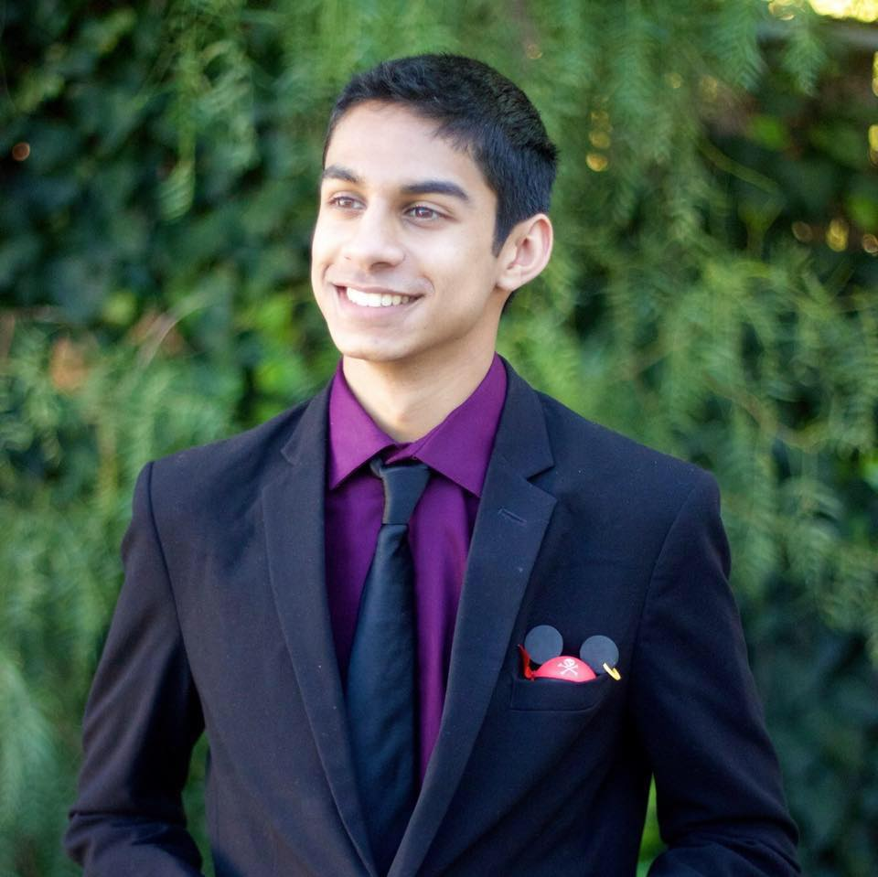
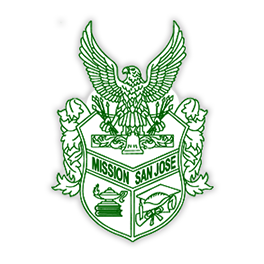

I was born and raised in the Bay Area and am proud to call Silicon Valley my home. I was a Boy Scout for 10 years and earned the rank of Eagle Scout, Scouting's highest honor, in 2014. I have also been playing the French horn for 8 years and participated in my high school’s marching and symphonic bands, where I served as section leader during my senior year. When I’m not coding, I’m usually playing with my adorable dog, working at the local waterpark, playing video games with my friends, or relaxing with my family.
 I currently attend the Viterbi School of Engineering at the University of Southern California. I am majoring in Computer Engineering and Computer Science, which allows me to learn how to work with both hardware and software. I am a Presidential Scholar at USC, due to my academic excellence in high school. I am currently a part of several computer engineering organizations: the Association for Computing Machinery, USC Makers, Corpus Callosum, and Queers in Engineering, Science, and Technology.
I currently attend the Viterbi School of Engineering at the University of Southern California. I am majoring in Computer Engineering and Computer Science, which allows me to learn how to work with both hardware and software. I am a Presidential Scholar at USC, due to my academic excellence in high school. I am currently a part of several computer engineering organizations: the Association for Computing Machinery, USC Makers, Corpus Callosum, and Queers in Engineering, Science, and Technology.

I attended Mission San Jose High School, a local public school that US News considers the 6th best high school in California and the 76th best high school in the nation. I graduated in 2016 with a GPA of 3.96 and with 5 perfect AP scores in under my belt. Outside of academics, I played the French horn in the Warrior Marching Band and symphonic band, and was chosen to be section leader in my senior year. I was also Activities Coordinator for the beatboxing club and Head of Public Relations for the Teach the Future Foundation club.